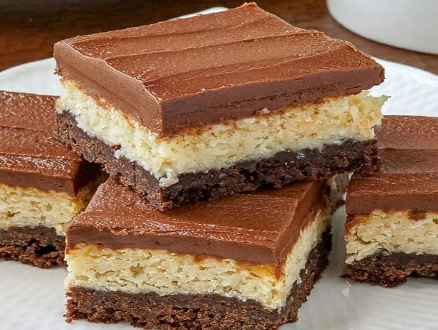
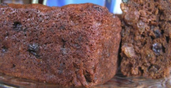
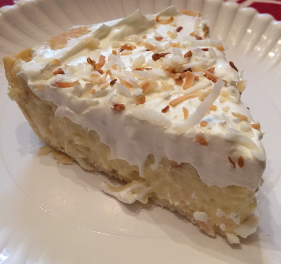

Coconut Chocolate Squares
View

Caribbean Christmas Cake
View

8-10
8 peeled, chopped apples ¼ cup brown sugar 1 ⅓ cups plain flour ⅔ cup soft butter ½ cup superfine sugar 1 tsp (teaspoon) ground cinnamon 12 bananas 2 mangos
Preheat the oven to 375°F or 200°C, pour the brown sugar and cinnamon in a small saucepan, add 2 tablespoons of water, add the apple, cover and cook until softened. Then set aside.
Next, pour the flour into a mixing bowl, mix the butter with the flour (you can use your fingers to work in the butter) until the mixture looks like crumbles, pour the sugar and stir.
Skin the mango, remove the seed, then chop both the bananas and the mangos into chunks and mix with the sauced apples, the banana and mango together (spread the fruit mixture into layer), put them in layers in a baking dish or heat proof serving dish, spread the crumble toppings over the fruit.
Bake for 44-50 minutes until golden-brown. Let sit out for 15 minutes before serving.
Serve warm from the oven with ice cream.
Back12 Bars
¼ cup melted butter (unsalted) 1 egg ½ cup sugar ½ tsp vanilla ½ cup superfine sugar ¼ cup flour ⅓ tsp baking powder ¼ tsp salt (if unsalted butter is used) ¼ cup shredded coconut ⅓ cup cocoa ½ tbsp (tablespoon) butter melted
Mix the egg and sugar together, add the melted butter & vanilla. Mix flour, baking powder and salt together, add to the mixture (the wet ingredients), then blend together.
Divide the batter into two separate bowls, add the cocoa, and ½ melted tablespoon butter to one of the mixtures in the bowl. Add coconut to the other bowl.
Pour the chocolate batter into a 6x8 inch pan, spread the coconut mixture on top. Bake at 325°F for 25 mins. Check while it bakes (Don’t over bake). Let it cool.
Melt the chocolate chips in the oven for a minute, mix with the melted butter. Set aside.
Spread on the baked cake and let it cool. Cut into bars. Serve or put in the fridge by serving if need be.
Back
8
2 large oranges 1 tsp orange zest 12 medium bananas 1 cup brown sugar 12 tbsp unsalted butter 12 tbsp dark rum 1 cup fresh breadcrumb 6 tbsp rolled oats 1 tsp ground cinnamon 1 ½ cup chopped pecans (nuts) toasted
Heat oven at 400°F.
Squeeze out 6 tablespoons fresh orange juice, cut the bananas into thin slices and set aside.
Then combine ½ of the sugar, ⅓ of the butter and ½ of the rum in a large frying pan. Cook over medium heat, stir frequently, until sugar has dissolved and mixture is starting to bubble. Stir in bananas and toss until evenly coated. Remove from heat.
Divide half of the banana mixture among 4 (1 ramekin cups). Sprinkle each with 1 tablespoon of breadcrumbs. Top with remaining banana mixture.
Spoon orange juice over each ramekin, combine the remaining breadcrumbs, sugar and butter with oats, orange zest and cinnamon, mix together with fingertips till mixture resembles coarse crumbs. Then sprinkle over bananas.
Bake for 25 minutes, till the topping is crispy and golden.
Serve warm, topped with cream or ice-cream (depends on your preference) and sprinkle with nuts.
Back10
½ cup soft butter 1 cup sugar 2 tbsp browning sauce (for darkening the cake, if the dark rum is not used) 1 tsp vanilla 1 1⁄2 cup all-purpose flour 1 tsp baking powder 1 tsp ground cinnamon 1⁄2 tsp allspice 1⁄2 tsp salt 4 large eggs 1 cup dark rum (brandy can be substituted, as can red wine) 1⁄4 tsp mixed peel 1⁄4 cup mixed nuts (unsalted) - Optional, based on preference 1⁄2 cup chopped prunes - Optional, based on preference 1 cup raisins ½ tsp lime, zest of, freshly grated ½ lemon zest
Preheat the oven to 325°F, spray a 9-inch cake pan with nonstick cooking spray and set aside.
Beat together the butter, sugar, vanilla and browning in a mixing bowl until soft and creamy. Then, in a large mixing bowl, shift together the flour and the rest of the dry ingredients. Beat the eggs with the rum in another bowl.
Now add the egg mixture to the butter mixture, mix them together thoroughly, stir in the zest, fruit and nuts.
Then add and fold in the flour mixture (do not overbeat).
Transfer the batter into the greased pan and bake in the oven for approximately 90 minutes, or until the knife or toothpick inserted into the cake comes out clear, if not the cake may need to stay longer.
Allow to cool before removing it from the pan.
Cool before serving.
Back8
1 ¼ cups all-purpose flour 1 tsp sugar ¼ tsp salt ¼ tsp baking powder ⅓ cup shortening 1 egg, separated 5 ½ tbsp cold water, divided
Pour into a large bowl, the flour, sugar, salt and baking powder, scoop in the shortening, mix until the mixture resembles coarse crumbs.
Add the beaten egg with yolk, and ¼ cup cold water gradually to the crumb mixture, toss with a fork until a dough is formed. Cover and refrigerate for 1 hour.
Cut the dough in halves, roll out each portion to fit an 8-inch pie plate, trim the pastry and spread in the pastry evenly to the edge.
Cut out small round circles out of dough scraps with a small rounded fluted cutter. Use the beaten egg white with the remaining water to brush over the edges of the pastry, then arrange the dough cutouts around the edge.
Now line pastry shell with a double sheet of heavy-duty foil. Bake at 400°F for 12-15 minutes, or lightly brown. Cool on a wire rack.
Pour in a large saucepan, mix the sugar, flour and salt together, stir in milk until smooth. Cook and stir over medium-high heat until thickened and bubbly. Reduce heat to low heat, cook and stir for 2 minutes, then remove from the heat.
Break the egg, separate the egg white from the yolk, beat the yolk, stir a small amount of hot mixture into egg yolks gradually, one at a time, stir constantly until all the mixture has been poured, then boil gently, cook and stir for 2 minutes. Remove from the heat; gently stir in coconut and extracts. Pour filling into pastry shells.
Mix together the sugar, cornstarch and water in a saucepan until smooth, then boil over medium heat and stir constantly. Cook and stir for 2 minutes until clear.
Then in a large bowl, beat the egg white till soft peaks form, pour in the hot sugar mixture the egg whites, beat constantly until stiff peaks form.
Spread evenly over hot fillings, seal the edges of the crust, bake at 350°F for 12-15 minutes or until the meringue is golden brown, cool on a wire rack for an hour. Refrigerate for at least 3 hours before serving.
Sprinkle with the toasted coconut before serving, refrigerate the leftovers.
Back
16
4 cups shredded coconut 2 pints of ice cream
Preheat the oven to 350°F degrees
Spread the coconut over a baking sheet and bake until lightly toasted (make sure it’s not dark brown) for 6-8 minutes, try to watch carefully!
Transfer the coconut to a bowl and let cool.
Then, just before serving, place the coconut in a pie pan. Use an ice cream scoop to form 2-inch balls of ice cream, shake in or sprinkle the toasted coconut on the ice cream balls and enjoy.
The snow princess coconut balls can be used to garnish other dishes.
Back
6
½ cup shredded coconut 2 cups flour 1 cup sugar ½ tsp cinnamon ½ tsp nutmeg 1 tsp vanilla 1 tsp baking powder ½ cup milk ¼ cup coconut cream 2 tbsp sour cream ¼ tsp salt 2 eggs beaten
In a bowl, mix all the ingredients and let it be thick. Pour the mixture into a 5x9 inch loaf pan, bake in the oven at 350°F degrees for one hour or until done.
Serve warm.
Back